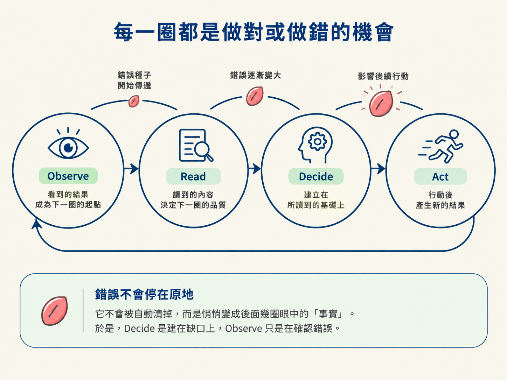
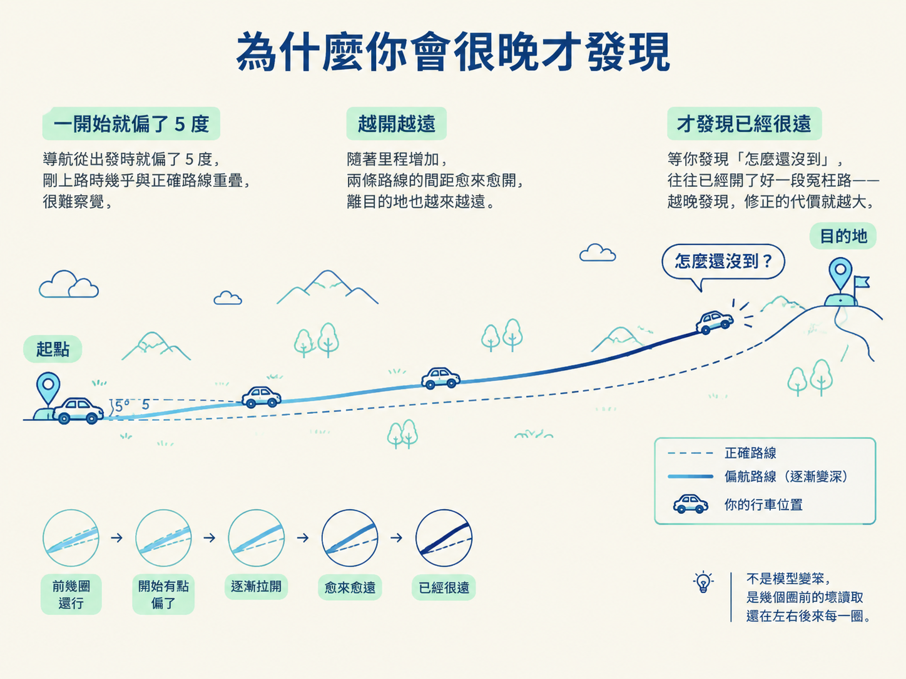

這一節要講清楚：為什麼一次不完整的讀取，會讓後面的 Decide 建在缺口上、錯誤如何一圈一圈複利，還有為什麼 session 總是「前幾圈還行、然後慢慢漂走」，讓你根本說不出是從哪一步開始壞的。
上一節那場除錯演得很漂亮：Read 讀到對的東西，所以後面每一圈都站得穩。但真實的 session 不會每次都這麼乖。這一節要看迴圈的另一面：某一拍的讀取不完整時，接下來會發生什麼事。
答案有點嚇人：錯誤不會乖乖留在出錯的那一圈。它會往下傳，而且愈傳愈難收拾。你不認識這個機制，就會反覆遇到同一種狀況：前面聊得好好的，怎麼突然整段歪掉，而且你完全追不出它是從哪裡開始壞的。
先把迴圈看成一條因果鏈：每一圈，都是「做對」或「做錯」的機會。它照著讀到的東西去決定、照著決定去動手、再照著結果進入下一圈。所以每一圈都綁在上一圈身上。
如果它讀得不完整，Decide 這一拍就建在一個缺口上。它不是想錯，是手上的材料本來就缺一塊。接著如果照這個壞決定去 Act，Observe 其實只是在確認一個錯誤，然後把它餵進下一圈。錯誤於是不會停在原地，它會一圈一圈複利，因為每圈都建立在上一圈之上。
你可以把迴圈想成接力賽。這一圈 Observe 看到的東西，是下一圈 Read 的起點；而這一圈讀到的東西，又決定下一圈 Decide 的品質。一個錯掉的位元不會被自動清掉，它會悄悄變成後面幾圈眼中的「事實」。

更麻煩的是，這種偏差通常不會在出錯的那一圈就露餡。課程形容這種狀況是「慢慢漂走」：session 前幾圈看起來都好好的，然後才一點一點偏掉。
就像開車導航一出發就偏了五度。剛上路你根本感覺不出來，開一小段還像對的，路邊風景也還合理。但開得越久，離目的地就越遠。糟糕的是，等你發現「怎麼還沒到」，往往已經開了好一段冤枉路。越晚發現，修正的代價就越大。

漂走不等於模型變笨了。課程講得很白：模型在第 80 則訊息時，能力跟第 1 則訊息時一模一樣。真正變的是它的處境：三個圈之前那個壞讀取或壞決定，還在塑造它之後的每一圈。把責任推給「模型不行了」，你就不會去找那個真正的起點。
每一圈都是做對或做錯的機會。讀得不完整，Decide 就建在缺口上；照著壞決定去 Act，Observe 只是確認錯誤並把它餵進下一圈。錯誤會一圈一圈複利，因為每圈都建立在上一圈之上。所以 session 常是「前幾圈還行、然後慢慢漂走」。不是模型變笨，是幾個圈前的壞讀取還在左右後來每一圈。
這個複利的機制，正好決定了你該把力氣花在哪裡。你很難在出錯的那一圈當場看到問題，症狀往往晚很多才冒出來，所以關鍵變成：你能不能貼得夠近，在它剛偏一點點的時候就攔下來，而不是等它歪了三十圈才收拾。下一節就把這件事收成一組當場可用的判斷規則。